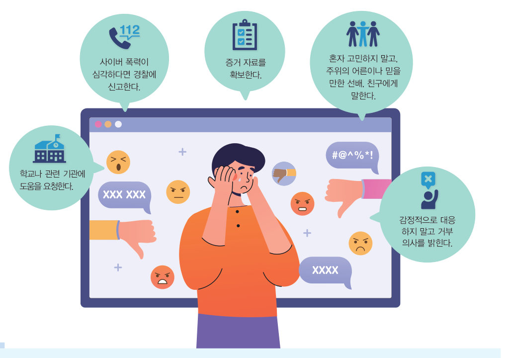
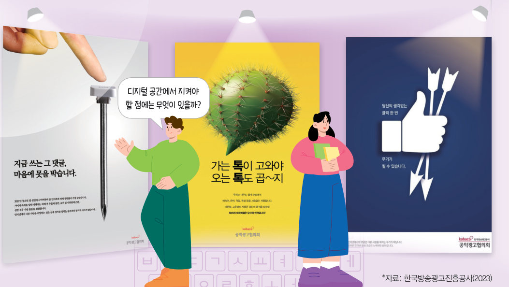
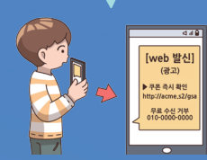
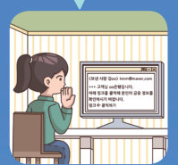
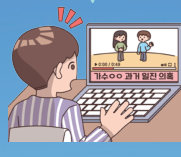
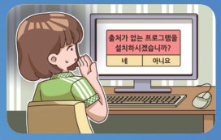

얼굴이 보이지 않는 디지털 공간에서는 말 한마디가 더 날카로워지기도 한다. 실태 조사 그래프로 청소년과 성인의 사이버 폭력을 비교하고, 여러 사례가 어떤 유형인지 가려내며, 수상한 메시지함 속 피싱·스미싱·가짜 뉴스·파밍을 찾아 대처해 보자.

디지털 사회로 급격히 변화하면서 사이버 폭력 문제가 증가하고, 이에 따라 디지털 윤리의 중요성이 커지고 있다. 공익 광고를 보면서 디지털 공간에서 글을 올리거나 자료를 주고받을 때 어떤 점을 주의해야 할지 알아보자.
| 친구의 그림 자랑 글: “이게 그림이냐? 유치원생도 이것보단 잘 그리겠다 ㅋㅋ” | |
| 발표 영상: “목소리 너무 작아서 짜증 남. 발표 왜 함?” | |
| 게임 패배 후: “너 때문에 졌잖아. 다시는 같이 하지 마라.” |
디지털 공간에서 우리는 현실에서와 마찬가지로 친구들과 소통하고, 필요한 물건을 구매하며, 수업을 듣는 등 많은 시간을 보낸다. 하지만 디지털 공간에서는 이름과 얼굴이 잘 드러나지 않는다는 특성을 악용하여 다른 사람에게 욕설을 하거나 비방하는 사람도 있다. 또한, 이러한 사이버 폭력을 상대방이 먼저 시도했다는 명분으로 이를 정당한 행동으로 생각하며 죄책감을 느끼지 못하는 사람도 많다.
사이버 폭력은 일반적인 폭력과 마찬가지로 상대방에게 큰 피해와 상처를 주는 범죄 행위가 될 수 있다. 디지털 공간에서도 자기의 행동에 책임을 느끼고, 타인을 존중하고 배려하는 디지털 윤리를 반드시 지켜야 한다.
| 어떠한 행위를 한 사람이 누구인지 드러나지 않는다. | |
| 상대방을 직접 만나지 않고 상호 작용할 수 있다. | |
| 정보의 전달 속도가 빠르다. | |
| 지리적 한계를 벗어나 정보의 전달 범위가 넓다. |
사이버 폭력 및 범죄는 디지털 공간을 통해 빠르게 퍼지고 사이버 스토킹 등으로 이어질 수 있어 피해가 심각하다. 사이버 폭력 및 범죄는 밖으로 잘 드러나지 않지만 피해를 입게 되면 친구를 사귀기 어려워하고 우울과 불안, 또는 자기 비하와 같은 심각한 정신적 영향을 주기도 한다.
| 반 친구의 전화번호와 집 주소를 SNS에 올려 모르는 사람들이 연락하게 했다. | |
| 상대방이 원하지 않는데 성적인 내용의 메시지와 사진을 계속 보냈다. | |
| 게임 채팅창에서 상대 팀에게 욕설과 인신 공격성 발언을 했다. | |
| 헤어진 친구에게 하루에도 수십 번 ‘어디야? 답장해’라는 메시지를 보내 불안하게 만들었다. | |
| 사실인지 확인하지 않고 ‘○○가 물건을 훔쳤다’는 글과 사진을 커뮤니티에 올렸다. | |
| 단체 대화방에 한 친구를 초대한 뒤 여러 명이 함께 놀리고, 나가면 다시 초대했다. |
사이버 폭력을 예방하려면 먼저 사이버 폭력의 유형과 피해를 이해하여 디지털 공간에서 상대방을 존중하고, 자기의 행동에 책임을 지며, 다른 사람에게 피해를 주지 않도록 해야 한다. 만약 사이버 폭력으로 피해를 입었다면 다음과 같은 방법으로 대처하고 문제를 함께 해결하려고 노력해야 한다.
디지털 공간에서는 거짓 정보와 디지털 범죄로 피해를 입지 않도록 해야 한다. 디지털 공간에서의 범죄는 지속적으로 발생하고 그 방법도 더욱 교묘해지기 때문에 주의를 기울여야 한다.




| 평가 기준 | 스스로 평가 |
|---|---|
| 디지털 윤리의 개념과 필요성을 설명할 수 있는가? | |
| 사이버 폭력의 심각성을 알고 사이버 폭력에 대응하는 방안을 세울 수 있는가? |